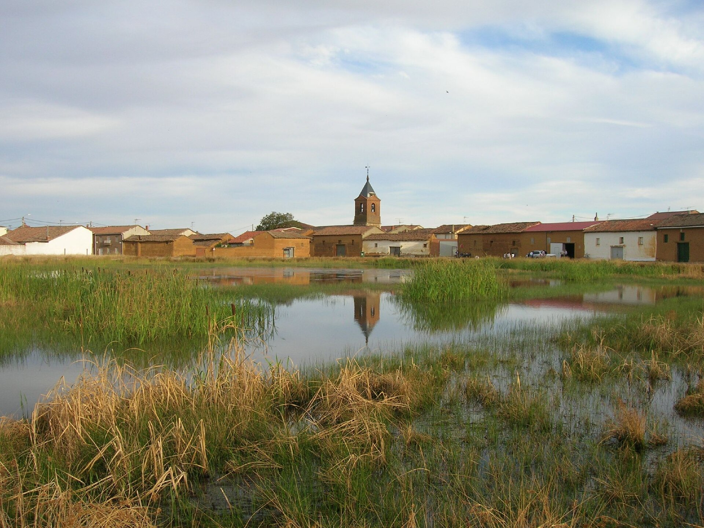

Domingo nublado y caluroso
Cielo cubierto pero sin gota de agua, con la máxima subiendo hasta los 33 grados y una mínima de 17. El viento sopla de forma notable, en torno a los 23 km/h.
33° 17°
Foto: José Antonio Gil Martínez from Vigo, Spain, CC BY 2.0, vía Wikimedia Commons
En El Burgo Ranero estamos ahora en 21 grados y el cielo despejado. A lo largo del día apretará el calor hasta los 32, con algo de viento flojo y sin nada de lluvia. Mañana viene más nublado y puede que suba un grado más, hasta los 33. Aprovecha la mañana de hoy para lo que tengas que hacer fuera, que al mediodía va a pegar de firme.
Los próximos díasCielo cubierto pero sin gota de agua, con la máxima subiendo hasta los 33 grados y una mínima de 17. El viento sopla de forma notable, en torno a los 23 km/h.
33° 17°Puede caer alguna llovizna suelta, aunque la probabilidad es baja, del 15%, y apenas dejaría una décima. Máxima de 31 grados y viento de 25 km/h.
31° 19°Alternancia de nubes y claros sin apenas opciones de lluvia. Máxima de 30 grados, mínima de 20 y viento algo más movido, sobre los 26 km/h.
30° 20°Todavía no hay fotos publicadas de El Burgo Ranero.
Traspasos, alquiler de locales y de viviendas, aperturas y comercios de El Burgo Ranero. Todavía no hay anuncios publicados.